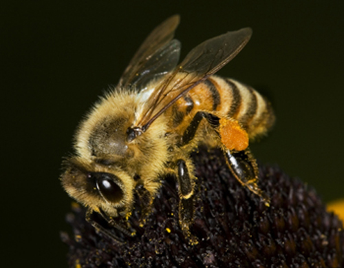

The European honey bee has long been the standard for agricultural pollination. Modern cropping systems that consist of large monocultures of insect-pollinated plants would not be possible without the use of mobile honey bee hives.
Honey bees are portable and can bring a large work force to a crop in a relatively short time. For many of today's beekeepers, pollination contracts are a major source of income, while honey is a secondary product.
Using bees to pollinate crops disrupts the regular life cycle of the colony. Colonies used extensively in pollination contracts often suffer from disturbance-related stress and poor nutrition. Both problems have been identified as contributing factors in Colony Collapse Disorder (CCD) and other declines in honey bee health and abundance. (FIGURE honey bees)
Honey bees are unusual among temperate zone pollinators in that the queen can live for several years, and the entire colony hibernates for the winter (ants also do this). During the winter, a healthy colony keeps itself warm by metabolizing honey stored during the previous summer. In spring, the colony is ready to go and can begin pollinating right away, provided that the weather is suitable (honey bees are not effective foragers at temperatures below about 15C).
The queen begins to produce brood before hibernation ends, and the colony requires large amounts of pollen at this time. If not enough pollen has been stored, and/or is not available in the environment, a supplemental feed or pollen substitute may be provided by the beekeeper (e.g., FeedBee or BeePro). This ensures a healthy and abundant workforce for even the earliest-blooming crops.
As the season proceeds, the colony continues to require larger amounts of pollen and nectar. As brood production drops the pollen (protein) requirements will decrease, but the nectar (carbohydrate) requirements grow as the colony builds its honey stores for the next winter. Providing sugar syrup as a nectar substitute can increase pollination efficiency of a hive, because it encourages foragers to collect pollen instead of nectar. This strategy should be used carefully, however, as nectar can contain essential vitamins and minerals that are important to the bees’ nutrition.
The recommended hive rental fee for honey bees in Ontario in 2011 was $70 per hive for spring pollination, and $120 per hive for summer pollination. These prices may vary from year to year, depending on demand for pollination services and the number of colonies available.
See Beekeeper Organizations in Useful Links.
References
Manning, R., Sakai, H., & Eaton, L. 2010. Methods and modifications to enhance the abundance of pollen on forager honey bees (Apis mellifera L.) exiting from beehives: implications for contract pollination services. Australian Journal of Entomology 49:278-285.
Ontario Beekeepers Association, http://www.ontariobee.com/index.php?action=display&cat=17
Robinson, W.S., Nowogrodzki, R., & Morse, R.A. 1989. The value of honey bees as pollinators of U.S. crops. American Bee Journal 477-487.